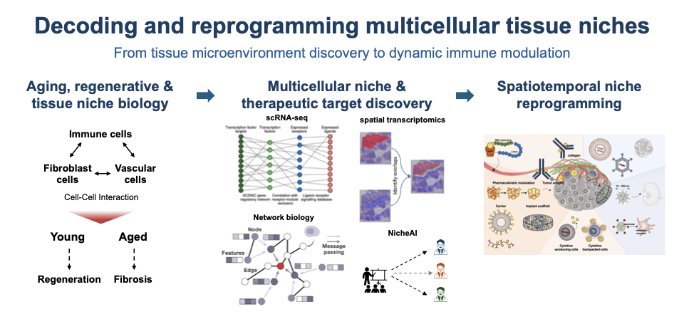

Skip to content
Research
Publications
Projects
Writing
CV
Biomaterials · Immunology · Data Science
Decoding multicellular tissue niches to discover therapeutic targets and engineer spatially and temporally precise interventions

Explore my research
View CV